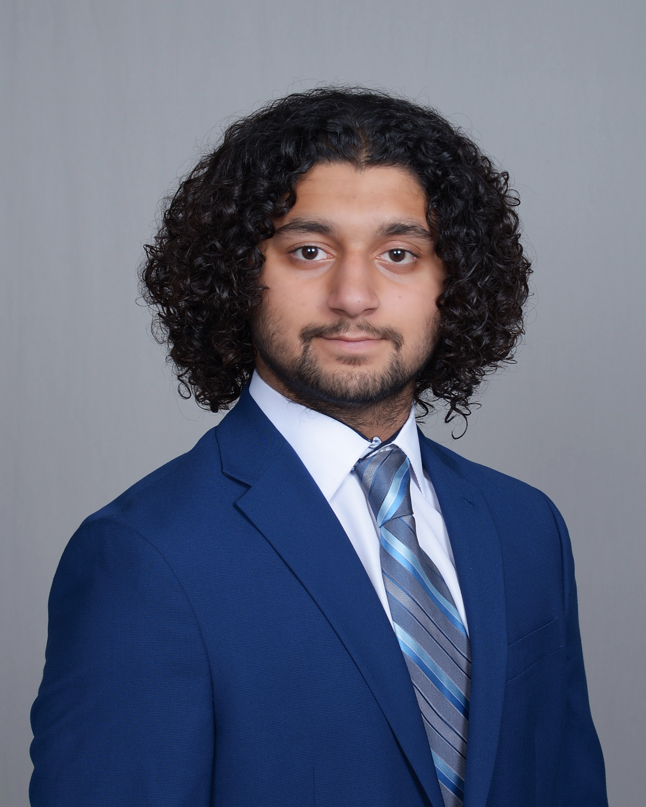
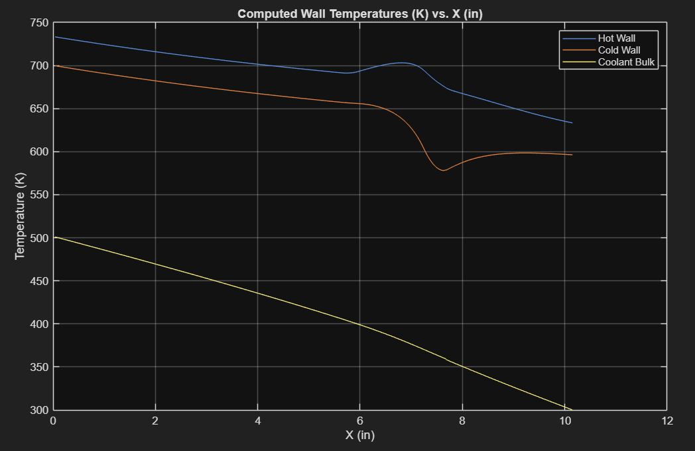
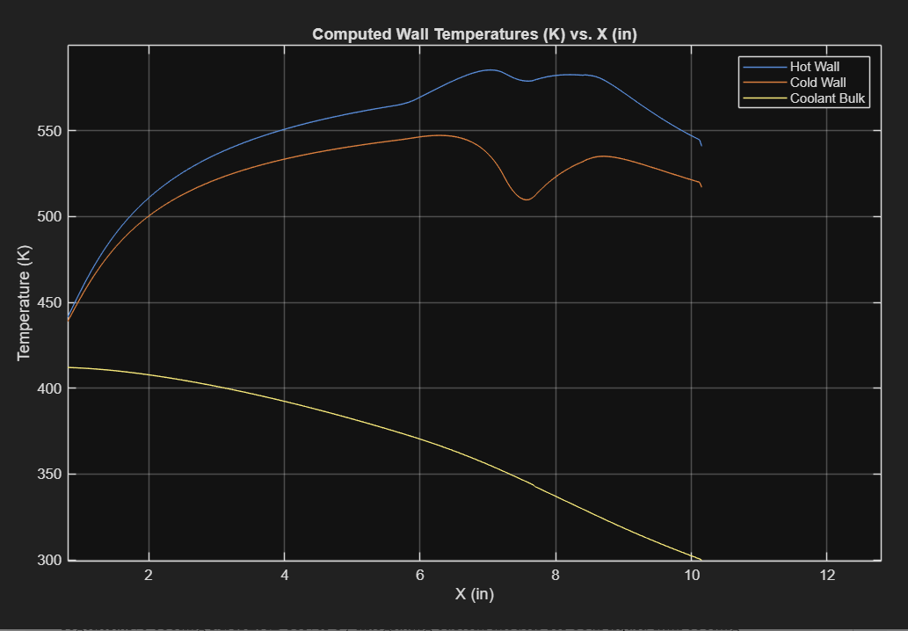
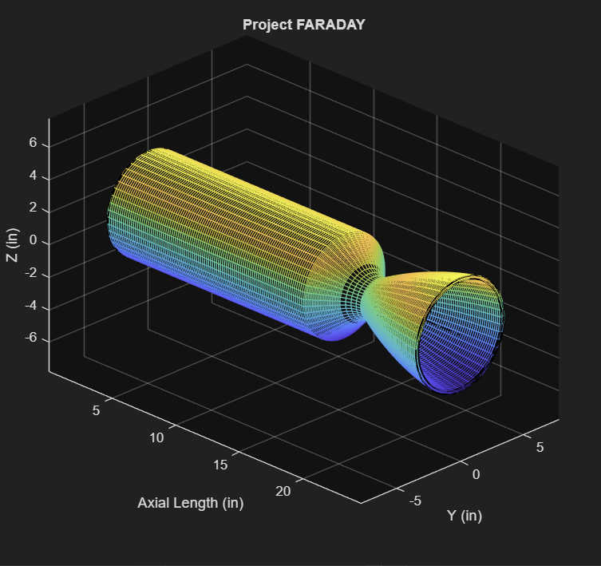
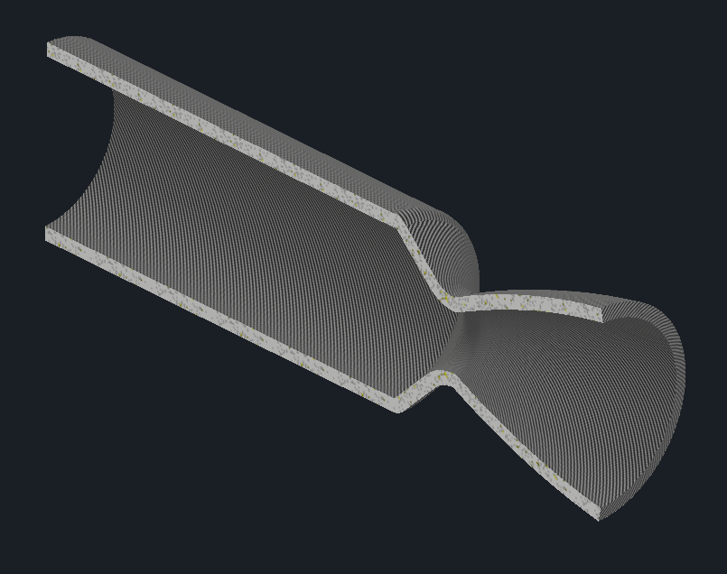
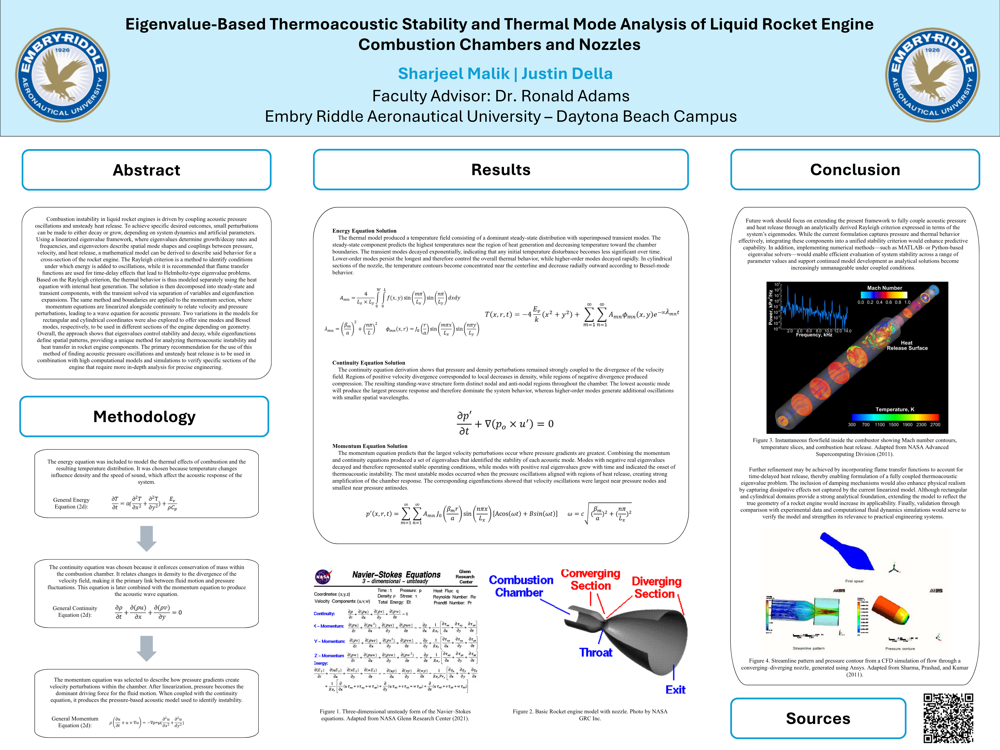

Hey, welcome to my portfolio! I'm Sharjeel Malik, an Aerospace Engineering student at Embry-Riddle specializing in Astronautics. I serve as the Lead Engineer for ERPL's Project R.E.D., led a 4-member team in the conceptual design for Project Faraday, and conduct undergraduate research in rocket engine thermoacoustic instabilities. Please explore my projects below!

To advance thermal analysis capabilities for Project R.E.D., I upgraded ERPL's legacy 1D regenerative cooling MATLAB solver by integrating custom models for liquid-film cooling and Polydimethylsiloxane (PDMS) thermal barrier coatings.
The film-cooling framework was developed using empirical relations from the Grisson paper and implemented as a modular, toggleable function within the core script to dynamically evaluate localized coolant-layer effectiveness and adiabatic wall-temperature reductions. To accurately capture the coupled thermal effects, I integrated a PDMS coating model directly into the main solver loop, adjusting the fundamental heat flux and wall temperature calculations based on operational data from other collegiate rocketry teams.
This combined numerical framework allows the propulsion team to run high-fidelity trade studies on composite thermal protection systems, characterizing critical heat fluxes and verifying engine survivability under nominal firing conditions.

Regen + PDMS

Regen + PDMS + Film
To streamline the conceptual development of Project Faraday, I built a comprehensive MATLAB engine sizing calculator that automates the geometric and performance design pipeline for a liquid bipropellant engine.
The framework utilizes a dynamic MATLAB wrapper to run NASA CEA on the fly, extracting real-time thermodynamic properties—including specific impulse (Isp), local Mach numbers, temperatures, and pressures—based on user-defined operational parameters such as thrust, chamber pressure, and O/F ratio. Using these outputs, the script calculates the core combustion chamber dimensions, propellant stay times, and contour profiles for the converging-diverging nozzle.
To bridge the gap between numerical analysis and CAD, the code automatically processes the continuous contour profile into discretized X, Y coordinate pairs and exports them directly into an organized Excel spreadsheet, enabling immediate, high-fidelity curve-splining within Autodesk Inventor.

MATLAB Geometry Output – Project FARADAY

Autodesk Inventor CAD model
To investigate thermoacoustic combustion instability in liquid rocket engines, I developed an analytical modeling framework that predicts acoustic mode behavior and thermal response within combustion chambers and nozzles.
Starting from the governing conservation equations for mass, momentum, and energy, I linearized the system and derived closed-form solutions describing pressure, velocity, and temperature perturbations under both rectangular and cylindrical boundary conditions. The framework employed eigenvalue analysis, separation of variables, and eigenfunction expansions to characterize acoustic stability, modal decay rates, and spatial mode shapes using sine and Bessel-function formulations appropriate for varying engine geometries.
To evaluate the coupling between combustion-driven heat release and chamber acoustics, I incorporated thermoacoustic stability concepts, including the Rayleigh criterion, establishing a mathematical foundation for predicting instability growth mechanisms in propulsion systems. The analytical formulation is currently being transitioned into a MATLAB-based computational solver.
↓ Download Research Paper
ERAU Undergraduate Research Poster – Spring 2026